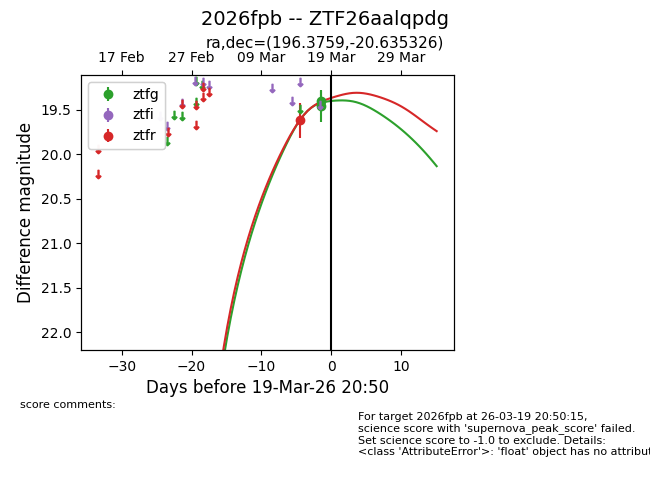
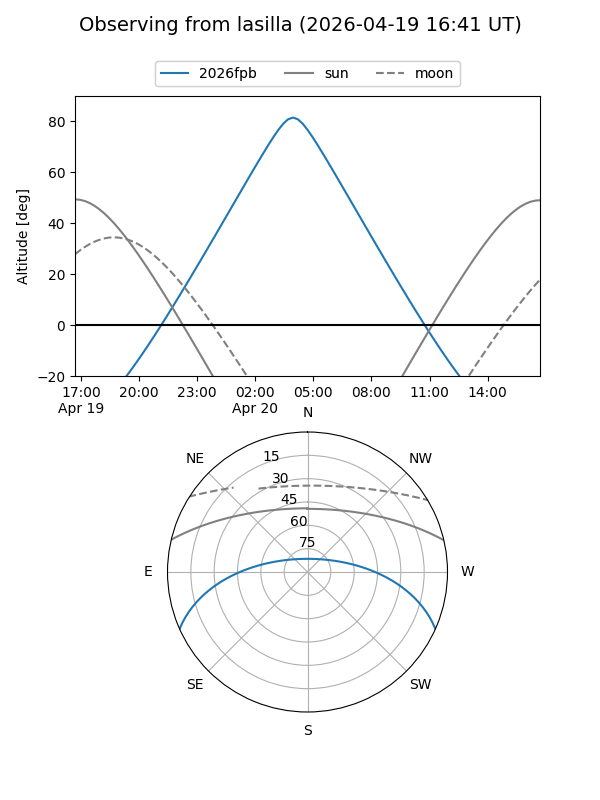
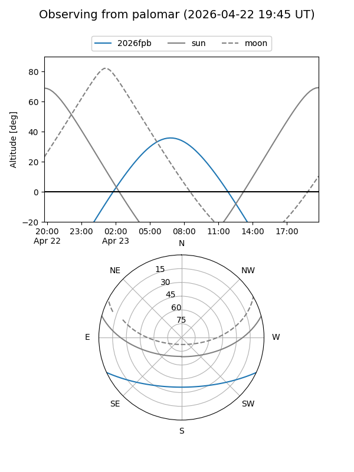
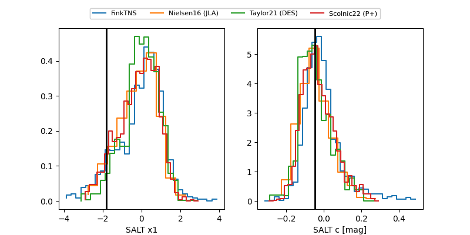

2026fpb
Target 2026fpb at 2026-03-19 20:51
Aliases and brokers:
FINK: link
Lasair: link
ALeRCE: link
TNS: link
YSE: link
alt names
ZTF26aalqpdg (ztf,fink_ztf)
2026fpb (tns,yse)
Coordinates:
equatorial (ra, dec) = 196.3759,-20.63533
equatorial (HMS+DMS) = 13:05:30.22,-20:38:07.17
galactic (l, b) = (307.3699,+42.11519)
Flags:
Photometry:
last ztfg=19.40, ztfr=19.62
2 ztfg, 1 ztfr detections
Lightcurve

Visibility


Additional plots
